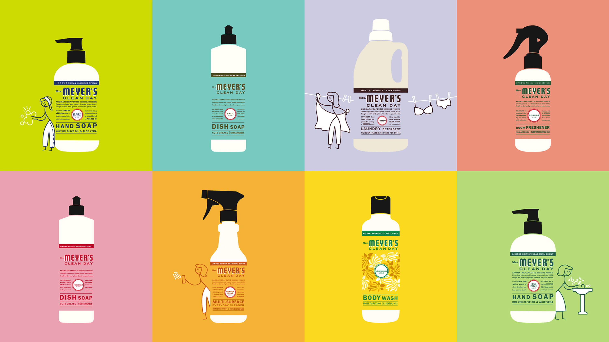
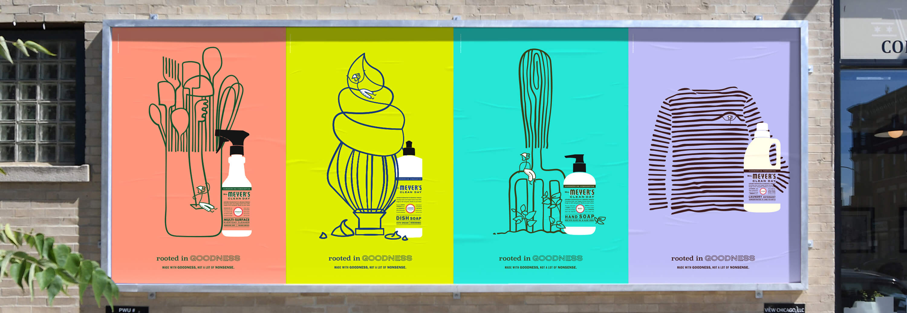
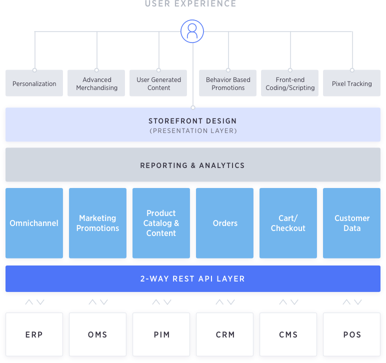

Led the solutioning, architecture, and program management to take Mrs. Meyer's from shelf-only to a full DTC engine on BigCommerce—integrating SAP, a third-party WMS, and a modern SaaS stack into SC Johnson's first reusable DTC blueprint.
Mrs. Meyer's was a cult-favorite brand with zero direct channel. SC Johnson depended entirely on Target, Walmart, and other retailers for both sales and customer insight. There was no owned relationship with end customers, no way to test bundles or subscriptions, and no first-party data to inform marketing or product decisions. Operationally, everything was tuned for pallets, not parcels: SAP and the LiveArea/Merkle WMS were built to ship truckloads to retailers, not thousands of individual consumer orders.
DTC expanded total revenue instead of cannibalizing retail channels.

Converted a retail-bulk stack into consumer-order operations without breaking existing supply chain behavior.
Success Criteria: Launch US & Canada DTC. Deliver 15%+ incremental revenue lift. Prove the stack is reusable for Caldrea and Method without rebuilding from scratch.

Key Decision: Treat this as a reusable template from day one — not a one-off launch. Every architectural call was filtered through "will this still make sense when we plug in Caldrea and Method?"

Mrs. Meyer's US ran January-July 2019 (7 months). Method started in March 2019 and completed in September 2019 (6-month parallel track).
Mapped SCJ's SAP and WMS landscape and defined the integration architecture across BigCommerce, SAP, Salsify, and LiveArea/Merkle WMS.
Method kicked off as a parallel workstream while Mrs. Meyer's US build and integrations continued.
The catalog was accidentally wiped pre-launch; Rewind backups restored everything, and Mrs. Meyer's US launched in the same month.
Method's 6-month parallel track completed, validating the shared architecture under overlapping delivery timelines.
How Measured: DTC revenue tracked against retail sell-out baseline. Incrementality confirmed by absence of retail volume drop. Stack reuse validated by Caldrea and Method launches on the same architecture.
BigCommerce leadership shared post-launch kudos and pushed to feature the project in the company showcase as a model enterprise DTC implementation.
SC Johnson sent a formal thank-you note after launch recognizing the work and describing the outcome as delivering “life-changing experiences.”